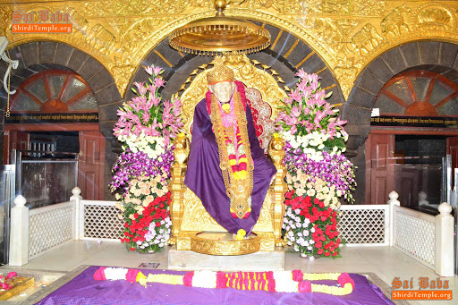

Temples in India
A Hindu temple is a symbolic house, seat and body of divinity. It is a structure designed to bring human beings and gods together, using symbolism to express the ideas and beliefs of Hinduism. The symbolism and structure of a Hindu temple are rooted in Vedic traditions, deploying circles and squares.It also represents recursion and equivalence of the macrocosm and the microcosm by astronomical numbers, and by "specific alignments related to the geography of the place and the presumed linkages of the deity and the patron". A temple incorporates all elements of Hindu cosmos—presenting the good, the evil and the human, as well as the elements of Hindu sense of cyclic time and the essence of life—symbolically presenting dharma, kama, artha, moksa, and karma.
More DetailsTotal Temples in India
India has more than 2 million Hindu temples recorded during the 2001 census, whose number has substantially increased by now. India has many places where people worship the Divine.
Styles of Architecture
The architectural principles of Hindu temples in India are described in Shilpa Shastra. Shilpa Shastra mentions three main type of temple architecture - Nagara or the Northern style, the Dravida or the Southern style and the Vesara or Mixed style.
Vedas
There are four Vedas: the Rigveda, the Yajurveda, the Samaveda and the Atharvaveda.
Famous Temples in India
Here is a list of famous hindu temples in India
Kedarnath Temple
Situated in the Himalayan range of Garhwal area (Uttarakhand), Kedarnath temple is one of the most sacred Shiva temples in the world. This holy abode of Shiva is said to be built by the Pandavas to atone for their sins committed during their battle with Kauravs. The temple was restored by Adi Sankaracharya in 8th century. It is one of the Chota Char Dhams of Uttarakhand and requires a pilgrim to walk a distance of 14 kms over the hilly surface. One can make use of a pony or manchan to simplify the journey.Surrounded by the glaciers and snow-covered peaks and standing at a height of 3,583 m, the temple is closed during winters due to severe cold conditions.
Badrinath Temple
Situated close to the Alaknanda River, the abode of Lord Badrinath is located in the Chamoli district, a small town of Badrinath (Uttarakhand). This holy shrine of Lord Vishnu forms a part of the four holiest sites (Char Dhams) in Hindu religion. It is also one of the four Chota Char Dham pilgrimage sites (comparatively minor pilgrimage sites). It is one of the 108 temples dedicated to Lord Vishnu (Divya Desams), which find mention in the works of Tamil saints who existed from 6th to 9th century.The ancient abode of Lord Vishnu can be visited only between April to November as in the rest of the months the weather is too harsh for undertaking a pilgrimage journey.
The Konark Sun Temple
The Sun temple is situated in the small town of Konark, which is situated in the Puri district of Odisha. This marvel of architecture is dedicated to Lord Sun. And resembling his carriage, the temple has been built in the shape of a chariot,which has twelve wheels and is shown as being dragged by the seven horses.The temple is believed to be constructed in the 13th century by a king called Narasimhadeva. Like with most things in India, this temple too has connections with a few legends. As per one of the legends, God Krishna cursed, one of his own sons with leprosy. To seek penance, Samba worshiped Lord Sun (Surya) for a period of twelve years. Pleased with his devotion, Surya healed him. Samba made the Sun temple in return to express his gratitude.
Somnath Temple
This is one of the oldest pilgrimage centres in India and finds mention in the ancient books, like Shivpuran, Skandpuran and Shreemad Bhagvat. Som refers to the ‘Moon God’, thus Somnath means ‘Protector of the Moon God’. According to a legend, Som got the temple built in the honor of Lord Shiva as it was Shiva who cured the illness, which was inflicted on him due to his father-in-law’s curse.It is one of the most revered ‘jyotirlings’ among the 12 existing jyotirlingas of India. The temple is located in Prabhas Kshetra in Saurashtra (Gujarat). Prabhas Kshetra is also the region in which, it is believed that, Lord Krishna left his mortal body.
Sanchi Stupa
Sanchi is a village in the Raisen district of Madhya Pradesh, which is a home to several Buddhist structures built in between 3rd century BC to 12th century AD. The most significant of them all is the Sanchi Stupa, also known as the Great Stupa. A Stupa is a holy place of Buddhist, which is built in the shape of a dome that consists of relics of Buddha.A UNESCO World Heritage Site – This famous pilgrimage site in India was built by the great emperor Asoka in the 3rd century BC. There are four intricately designed gateways surrounding the Stupa known as Toranas, each individually symbolizing the four emotions of love, peace, courage and trust. The Great Stupa is 16 meters high and 37 meters in diameter and preserves the relics of Buddha.
Ramanathaswamy (Rameshwaram) Temple
Rameshwaram or Rameswaram is a small island town in Tamil Nadu and is one of the four holiest pilgrimage places (Char Dhams) of the Hindus. The reason for its being so sacred is the belief that Lord Rama along with his wife Sita first landed on its shore after defeating the demon Ravana (who was also a Brahmin). To seek atonement for killing a Brahmin, Rama wanted to pray to Shiva. Hanuman was sent off to Kailash to bring an idol of the God. In the mean time, Sita made a small lingam. The one made by Sita is called Ramalingam and one brought by Hanuman is called Vishwalingam.
Vaishno Devi Mandir

Vaishno Devi is present here in the form of three rock heads, called the Pindies, instead of a statue. Due to the strong faith of the people, every year millions of them come to take the blessings of Maa Vaishno Devi. It is said that it is Maa Vaishno who decides her visitors. It is she who calls her devotees to her doorsteps. Anyone making a successful journey to her shrine is there because of her wish. The shrine is open all year round.Vaishno Devi Mandir is located at an altitude of 5200 ft in a mountain called Trikuta. It is situated in Jammu and Kashmir, near Katra town.
Siddhivinayak Temple

Located in Prabha Devi, Mumbai, Siddhivinayak Temple was built in the 18th century. Siddhivinayak or Lord Ganesha is the supreme deity of the temple and is famous for being the first one to be worshipped before commencing any new work or assignment. That is why he is also known as Vighnaharta (the terminator of impediments).
Golden Temple
Sri Harmandir Sahib (also known Darbar Sahib or Golden temple) is the most pious place of pilgrimage for sikhism. The temple was built on the values of universal brotherhood and equality. The four doors, opening in the four prominent directions, openly welcome people from any faith or race to seek religious and spiritual contentment. The structure, revered for its superb architecture, is built on a level lower than that of the immediate surroundings, symbolizing the value of humility.
Kashi Vishwanath Temple

Located in the ancient and holy city of life and death Varanasi (Uttar Pradesh), Kashi Vishwanath temple is dedicated to Lord Shiva, also referred to as Vishwanath or Vishweshwara, meaning emperor of the universe. The city of Varanasi is also known as Kashi that is why the temple is famously called Kashi Vishwanath temple.The distinguished temple has been visited by many great holy men like Swami Vivekanand, Adi Shankaracharya, Goswami Tulsidas and Gurunanak. The merit or the blessings received from sighting jyotirling at Kashi Vishwanath is equal to that earned from visiting the rest of the 11 jyotirlings placed at several areas in India. A visit to the sacred temple of Shiva is believed to be one of the ways through which one can attain Moksha (ultimate liberation of the soul).
Lord Jagannath Temple
Built in the 12th century, Jagannath temple is situated in Puri (Orissa) and is popularly called Jagannath Puri. Dedicated to Lord Krishna, the temple is one of the four holiest places (Char Dhams) of India. Inside the main temple, with the idol of Lord Krishna (Jagannath) in between, the idols of Lord Balabhadra (brother) and Goddess Subhadra (sister) are placed. Non-Hindus cannot enter the premises of the temple. They can get a good view of this magnificent temple from the roof-top of the Raghunandan Library located just opposite to the temple. The annual and world famous Rath Yatra conducted at Puri gives a chance to get a good glimpse of the Lord Jagannath along with Balabhadra and Subhadra riding on the chariots. Thousands and thousands of people pulling the sacred chariot makes for a mesmerizing spectacle.
ISKCON Temple
Also known as the Krishna Balaram mandir, ISKCON (International Society for Krishna Consciousness) was built in the year 1975. Located in the holy land of Vrindavan (Mathura, Uttar Pradesh), the land which is believed to be the abode of Lord Krishna in his young age, the ISKCON temple is well known for the utmost standard of cleanliness and worship they maintain. The chants of ‘Hare Krishna’ reverberate in the temple all hours of the day. The temple belongs to the Gaudiya Vaishnava sect of Hinduism, which was founded by Chaitanya Mahaprabhu in the 16th century. Inside the temple there are idols of Krishna, Radha, Balarama, along with the idols of Chaitanya Mahaprabhu and Swami Prabhupada (founder of ISKCON).
Dwarkadhish Temple
The holy abode of Lord Krishna, Dwarkadhish temple is situated in the Dwarka city (Gujarat). Also known as Jagat Mandir, the temple has two doors for entry and exit for pilgrims. The entry door is called Swarg Dwar (doorway to heaven) and the exit door is called Moksha Dwar (the doorway to liberation).A part of the Char Dham pilgrimage, the 5-story structure of the temple is standing with the support of 72 pillars. Placed on the banks of River Gomti the temple reaches the height of 51.8 meters and a flight of 56 steps need to be taken to reach the Swarg Dwar. Inside the shrine, the Lord dazzles his devotees through his image built in black stone and reaches up to 2.25 ft.
Shirdi Sai Baba Temple
The holy temple of Sai baba was built in 1922, in the Shirdi town of Maharashtra. Located about 296 kms from Mumbai, the small town of Shirdi has attained fame due to its association with Shri Sai Baba. Spread in an area of 200 sq. Km, the shrine was made over the Samadhi of Sai Baba. Each day around 25,000 devotees come for Baba’s darshan and on festivals the figure comes into lakhs. Ramnavmi, Guru Purnima and Vijayadashami are the major festivals that are celebrated with great enthusiasm and passion. The principles of Sai Baba (like love, charity, forgiveness) are spread through the land of Shirdi, which has been made holy by the pure soul.
Tirupati Balaji
Located in the hilly town of Tirumala (Andhra Pradesh), the temple is also known as Tirumala Venkateswara temple. The temple is devoted to Lord Venkateshwara, who is popularly called ‘Balaji’ and is the incarnation of Lord Vishnu. Venkateshwara Tirupati Balaji is the second richest religious site with people offering money and gold to their Lord running into millions, each day. The ancient temple has been visited by the rulers of many grand dynasties of Southern India. The temple celebrates many festivals, most famous among them is Brahmotsavam (also known as ‘Salakatla brahmotsavam’), which goes on for 9 days and witnesses a great mass of the devotees.
Photo gallery
Photos of Famous Hindu Temples

{kind=link}
{kind=link}
{kind=link}
{kind=link}
{kind=link}
{kind=link}
{kind=link}
{kind=link}
{kind=link}
{kind=link}
{kind=link}
Contact
Our Address
Mumbai,Maharashtra
Email Us
contact@example.com